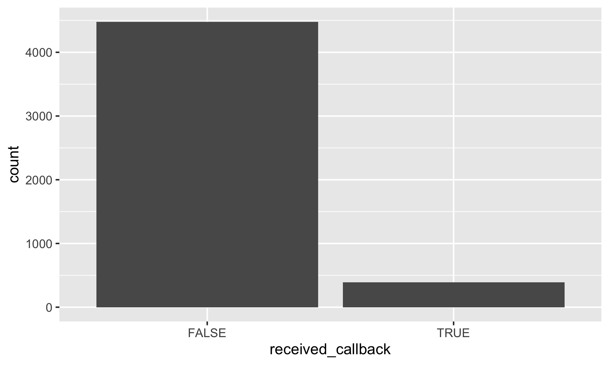
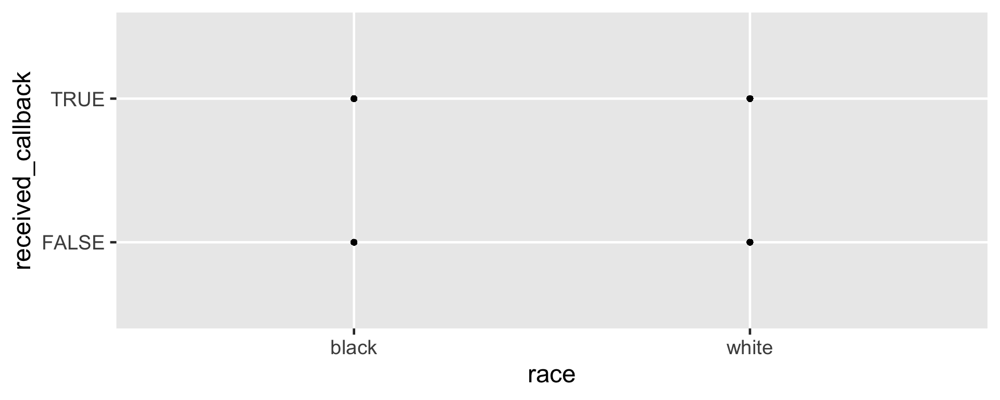
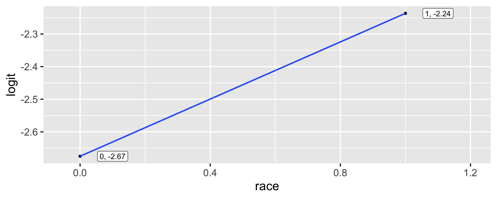

Rows: 4,870
Columns: 4
$ received_callback <lgl> FALSE, FALSE, FALSE, FALSE, FALSE, FALSE, FALSE, FAL…
$ race <chr> "white", "white", "black", "black", "white", "white"…
$ years_experience <int> 6, 6, 6, 6, 22, 6, 5, 21, 3, 6, 8, 8, 4, 4, 5, 4, 5,…
$ job_city <chr> "Chicago", "Chicago", "Chicago", "Chicago", "Chicago…Logistic Regression
Dr. Mine Dogucu
(Normal) Linear Regression Response Variables
- Birth weight of Babies (55 - 176 ounces)
- Sale Prices ($12789 - $755,000)
- Number of Species (6 - 129 mammals)
Logistic Regression Response Variables
- Will it rain tomorrow? (Yes/No)
- Is email spam? (Yes/No)
- Does the candidate receive a callback? (Yes/No)
When the response variable is binary a logistic regression model can be utilized.
- Researchers respond to help-wanted ads in Boston and Chicago newspapers with fictitious resumes.
- They randomly assign White sounding names to half the resumes and African American sounding names to the other half.
They create high quality resumes (more experience, likely to have an email address etc.) and low quality resumes.
For each job ad they send four resumes (two high quality and two low quality.)
Data
Response variable: received_callback

Notation
\(y_i\) = whether a (fictitious) job candidate receives a call back.
\(\pi_i\) = probability that the \(i\)th job candidate will receive a call back.
\(1-\pi_i\) = probability that the \(i\)th job candidate will not receive a call back.
Where is the line?
The Linear Model
We can model the probability of receiving a callback with a linear model.
\(\text{transformation}(\pi_i) = \beta_0 + \beta_1x_{1i}+\beta_2x_{2i} +.... \beta_kx_{ki}\)
\(logit(\pi_i) = \beta_0 + \beta_1x_{1i}+\beta_2x_{2i} +.... \beta_kx_{ki}\)
\(logit(\pi_i) = log(\frac{\pi_i}{1-\pi_i})\)
Note that log is natural log and not base 10. This is also the case for the log() function in R.
Probability \(\pi_i\) Probability of receiving a callback.
Odds \(\frac{\pi_i}{1-\pi_i}\) Odds of receiving a callback.
Logit \(log(\frac{\pi_i}{1-\pi_i})\) Logit of receiving a callback.
When race is black (0)
# A tibble: 2 × 3
received_callback n prop
<lgl> <int> <dbl>
1 FALSE 2278 0.936
2 TRUE 157 0.0645Note that R assigns 0 an 1 to levels of categorical variables in alphabetical order. In this case black (0) and white(1)
When race is black (0)
Probability of receiving a callback when the candidate has a Black sounding name is 0.0644764.
When race is white (1)
Probability of receiving a callback when the candidate has a white sounding name is 0.0965092.

This is THE LINE of the linear model. As x increases by 1 unit, the expected change in the logit of receiving call back is 0.4381802. In this case, this is just the difference between logit for the white group and the black group.
# A tibble: 2 × 5
term estimate std.error statistic p.value
<chr> <dbl> <dbl> <dbl> <dbl>
1 (Intercept) -2.67 0.0825 -32.4 1.59e-230
2 racewhite 0.438 0.107 4.08 4.45e- 5\(log(\frac{\hat \pi_i}{1-\hat \pi_i}) = -2.67 + 0.438\times racewhite_i\)
| Scale | Range |
|---|---|
| Probability | 0 to 1 |
| Odds | 0 to \(\infty\) |
| Logit | - \(\infty\) to \(\infty\) |
We will consider years of experience as an explanatory variable. Normally, we would also include race in the model and have multiple explanatory variables, however, for learning purposes, we will keep the model simple.
From logit to odds
Logit for a Candidate with 1 year of experience (rounded equation)
\(-2.76 + 0.0391 \times 1\)
Odds for a Candidate with 1 year of experience
\(odds = e^{logit}\)
\(\frac{\pi_i}{1-\pi_i} = e^{log(\frac{\pi_i}{1-\pi_i})}\)
\(\frac{\hat\pi_i}{1-\hat\pi_i} = e^{-2.76 + 0.0391 \times 1}\)
From odds to probability
\(\pi_i = \frac{odds}{1+odds}\)
\(\pi_i = \frac{\frac{\pi_i}{1-\pi_i}}{1+\frac{\pi_i}{1-\pi_i}}\)
\(\hat\pi_i = \frac{e^{-2.76 + 0.0391 \times 1}}{1+e^{-2.76 + 0.0391 \times 1}} = 0.0618\)
Note you can use exp() function in R for exponentiating number e.
Logistic Regression model
Logit form:
\(log(\frac{\pi_i}{1-\pi_i}) = \beta_0 + \beta_1x_{1i}+\beta_2x_{2i} +.... \beta_kx_{ki}\)
Probability form:
\(\large{\pi_i = \frac{e^{\beta_0 + \beta_1x_{1i}+\beta_2x_{2i} +.... \beta_kx_{ki}}}{1+e^{\beta_0 + \beta_1x_{1i}+\beta_2x_{2i} +.... \beta_kx_{ki}}}}\)
Estimated probability of a candidate with 0 years of experience receiving a callback
\(\hat\pi_i = \frac{e^{-2.76 + 0.0391 \times 0}}{1+e^{-2.76 + 0.0391 \times 0}} = 0.0595\)
Estimated probability of a candidate with 1 year of experience receiving a callback
\(\hat\pi_i = \frac{e^{-2.76 + 0.0391 \times 1}}{1+e^{-2.76 + 0.0391 \times 1}} = 0.0618\)
The estimated probability that a Black candidate with 10 years of experience, residing in Boston, would receive a callback.
\(\large{\hat\pi_i = \frac{e^{-2.78 + (0.0440 \times 0) + (0.0332\times10) + (-0.0329\times 0)}}{1+e^{-2.78 + (0.0440 \times 0) + (0.0332\times10) + (-0.0329\times 0)}} = 0.0796}\)
We have used the data for educational purposes. The original study considers many other variables that may influence whether someone receives a callback or not. Read the original study for other considerations.
Model Evaluation
# A tibble: 2 × 5
term estimate std.error statistic p.value
<chr> <dbl> <dbl> <dbl> <dbl>
1 (Intercept) 17.5 2.24 7.82 5.11e-15
2 gestation -0.0758 0.00846 -8.96 3.27e-19\(\hat p = \frac{\exp(b_0 +b_1x)}{1+\exp(b_0 + b_1x)}\)
\(\hat p\) when gestation is 284 = \(\frac{\exp(17.5 -0.0758 \cdot 284)}{1+\exp(17.5 -0.0758 \cdot 284)} = \frac{\exp(-4.0272)}{1+ \exp(-4.0272)} = 0.01751203\)
# A tibble: 1,223 × 2
pred pred_p
<dbl> <dbl>
1 -4.02 0.0177
2 -3.87 0.0205
3 -3.64 0.0256
4 -3.87 0.0205
5 -4.17 0.0152
6 -0.986 0.272
7 -1.06 0.257
8 -4.40 0.0122
9 -5.15 0.00574
10 -9.10 0.000112
# ℹ 1,213 more rowsCutoff
babies <- babies %>%
mutate(pred_y = case_when(pred_p < 0.5 ~ FALSE,
pred_p >= 0.5 ~ TRUE))
select(babies, low_bwt, pred, pred_p, pred_y)# A tibble: 1,223 × 4
low_bwt pred pred_p pred_y
<lgl> <dbl> <dbl> <lgl>
1 FALSE -4.02 0.0177 FALSE
2 FALSE -3.87 0.0205 FALSE
3 FALSE -3.64 0.0256 FALSE
4 FALSE -3.87 0.0205 FALSE
5 FALSE -4.17 0.0152 FALSE
6 FALSE -0.986 0.272 FALSE
7 FALSE -1.06 0.257 FALSE
8 FALSE -4.40 0.0122 FALSE
9 FALSE -5.15 0.00574 FALSE
10 FALSE -9.10 0.000112 FALSE
# ℹ 1,213 more rowsConfusion Matrix
low_bwt FALSE TRUE Total
FALSE 1161 5 1166
TRUE 53 4 57
Total 1214 9 1223Sensitivity (true-positive rate): 4/57 = 0.0702
Specificity (true-negative rate): 1161/1166 = 0.9957
Accuracy: (1161+4)/1223 = 0.9526